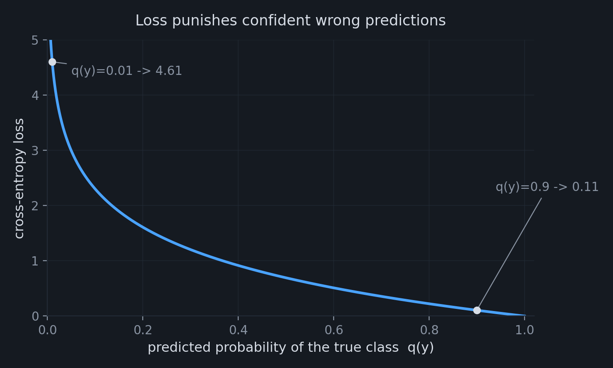
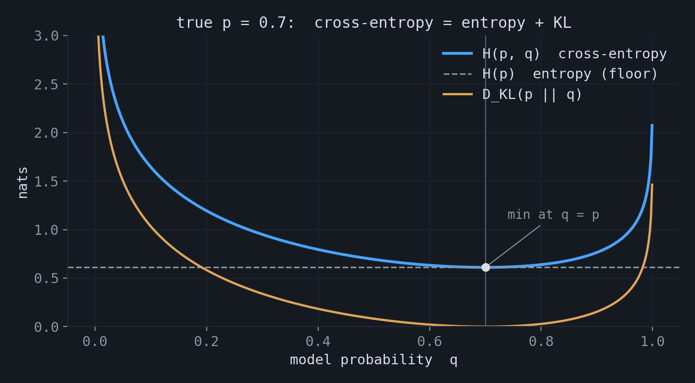
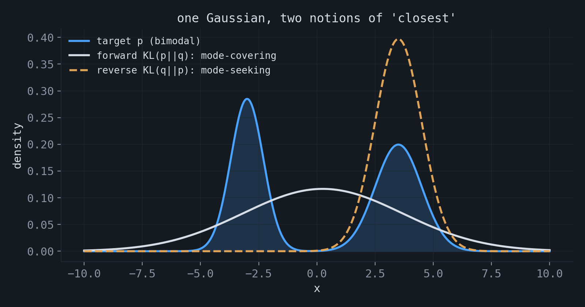
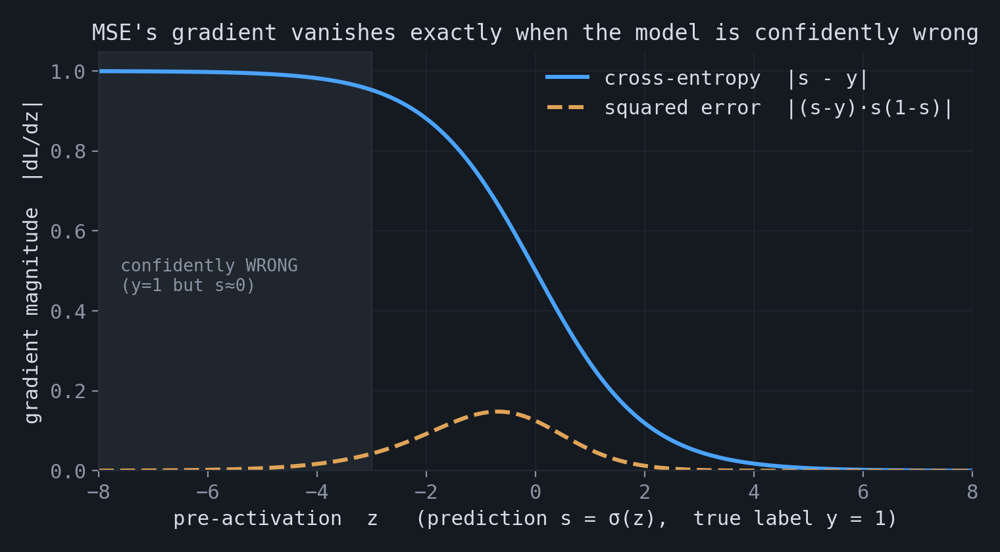
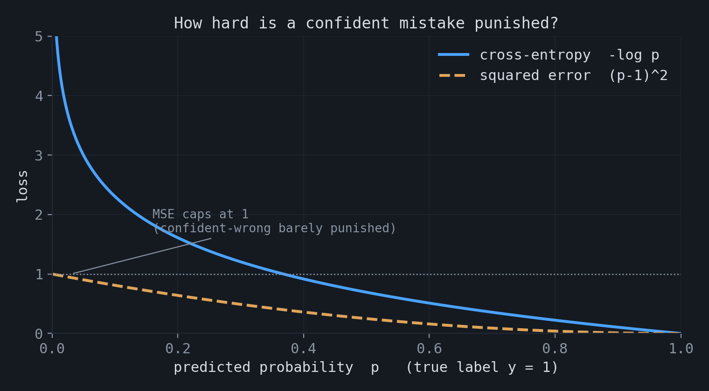

Several views on cross-entropy
Cross-entropy is one of the central objectives used in machine learning, especially in classification. It is often introduced as a formula, but it has a direct probabilistic interpretation: it answers the question, how probable is the observed data under the model? A simple way to see this is to start with a Bernoulli random variable.
1.Start with a Bernoulli variable
Consider a Bernoulli random variable with parameter $\hat{y}$. The observed outcome is $y$, where $y = 1$ denotes success and $y = 0$ denotes failure. The probability assigned by the model to the observed outcome is
$$ P(y) = \hat{y}^{\,y}\,(1 - \hat{y})^{\,1-y}. $$When $y=1$, this expression becomes $\hat{y}$. When $y=0$, it becomes $1-\hat{y}$. The formula simply selects the probability corresponding to the outcome that occurred.
Now consider $n$ independent observations. The likelihood of the full sequence is the product of the individual probabilities. Taking the logarithm converts this product into a sum, and multiplying by $-1$ gives an objective in which smaller values are better:
$$ -\log P = -\sum_{i=1}^{n}\Big[\,y_i \log \hat{y}_i + (1-y_i)\log(1-\hat{y}_i)\,\Big]. $$This is the objective minimized by logistic regression, where the Bernoulli parameter is produced by a sigmoid, $\hat{y} = \sigma(w^\top x)$. Therefore, minimizing binary cross-entropy is equivalent to maximum likelihood estimation for a Bernoulli conditional model.
2.Why the logarithm appears
The logarithm has two important roles. First, it transforms products of independent probabilities into sums, which are easier to optimize. Second, it assigns a large penalty to confident errors. If the model assigns probability $0.9$ to the observed outcome, the loss is $-\log 0.9 \approx 0.11$. If it assigns probability $0.01$ to the observed outcome, the loss is $-\log 0.01 \approx 4.61$.

3.From binary outcomes to many classes
For a classification problem with more than two possible outcomes, the target is often represented by a one-hot vector $p$. This vector is equal to $1$ for the true class $y$ and $0$ for all other classes. The general cross-entropy is a sum over all classes, but the one-hot target leaves only the term corresponding to the observed class:
$$ H(p, q) = -\sum_k p(k)\,\log q(k) = -\log q(y). $$The objective is therefore to assign high probability to the class that actually occurred.
4.The identity relating cross-entropy, entropy, and KL divergence
At the distribution level, cross-entropy decomposes into two terms:
Here $H(p)$ is the entropy of the data-generating distribution, and $D_{\mathrm{KL}}(p\|q)$ measures the discrepancy between the true distribution $p$ and the model distribution $q$. Since $H(p)$ does not depend on the model parameters, minimizing cross-entropy is equivalent to minimizing the forward KL divergence from $p$ to $q$. In the plot, the cross-entropy curve is the entropy floor plus the KL divergence, and both are minimized at $q = p$.

5.The KL derivation
The identity follows directly from the definition of KL divergence:
$$ D_{\mathrm{KL}}(p \,\|\, q) = \mathbb{E}_p\!\left[\log \frac{p(x)}{q(x)}\right] = \mathbb{E}_p[\log p(x)] - \mathbb{E}_p[\log q(x)]. $$The first term is $-H(p)$, and the second term is $-H(p,q)$. Hence $D_{\mathrm{KL}}(p\|q) = H(p,q) - H(p)$, or equivalently, $H(p,q) = H(p) + D_{\mathrm{KL}}(p\|q)$.
6.Coding theory
Cross-entropy also has an interpretation in coding theory. The entropy $H(p)$ is the shortest achievable average message length when the true distribution is known. The cross-entropy $H(p,q)$ is the average message length when the code is constructed for distribution $q$, but the data are generated from distribution $p$. The difference, $D_{\mathrm{KL}}(p\|q)$, is the additional expected code length caused by using the wrong distribution.
7.Proper scoring rule
Cross-entropy is a proper scoring rule. In expectation, it is minimized by reporting the true probabilities. If the true conditional distribution is $p(y\mid x)$, the optimal prediction is $q(y\mid x) = p(y\mid x)$. This distinguishes cross-entropy from accuracy: accuracy evaluates only whether the most probable class is correct, while cross-entropy also evaluates the probability assigned to that class. A model that assigns probability $0.9$ should be correct approximately $90\%$ of the time on such predictions.
8.Empirical risk and the Bayesian view
In practice, the true distribution $p$ is unknown, and only a finite sample is observed. Replacing $p$ by the empirical distribution $\hat{p}$ turns cross-entropy into the average negative log-likelihood over the sample. This is maximum likelihood estimation. If a prior $p(\theta)$ is added over the parameters, the objective becomes maximum a posteriori estimation:
$$ \theta_{\text{MAP}} = \arg\min_\theta \Big[-\sum_i \log p_\theta(x_i) - \log p(\theta)\Big]. $$The additional term $-\log p(\theta)$ acts as regularization. For example, an L2 penalty corresponds to a Gaussian prior on the model weights.
9.Soft labels
Targets do not have to be one-hot. When $p$ is a full distribution, cross-entropy
$$ -\sum_k p_k \log q_k $$compares the entire target distribution with the predicted distribution. This is used in label smoothing, knowledge distillation, and settings with multiple annotators. For example, if a teacher model provides $p=(0.7,0.2,0.1)$ and a student model predicts $q=(0.6,0.3,0.1)$, the loss evaluates the full probability vector, not only the class with the largest probability.
10.Forward and reverse KL
Minimizing cross-entropy with respect to $q$ minimizes the forward KL divergence $D_{\mathrm{KL}}(p\|q)$. This direction strongly penalizes cases where the true distribution assigns probability mass but the model assigns little or none. As a result, forward KL tends to produce mode-covering approximations.
The reverse direction, $D_{\mathrm{KL}}(q\|p)$, behaves differently. It penalizes the model for assigning probability mass where the true distribution has little mass, and it often produces mode-seeking approximations. This distinction is important in variational inference.

11.Why not use MSE?
For binary targets, one might instead minimize squared error, $(\hat{y}-y)^2$. This is not an invalid objective. The squared error of a probabilistic prediction is the Brier score, which is also a proper scoring rule. In expectation, it is minimized at the true probability.
The difference is in the optimization behavior. Suppose $\hat{y}=\sigma(z)$, where $z$ is the pre-activation. For a binary target, the gradients with respect to $z$ are
$$ \text{cross-entropy:}\;\; \frac{\partial L}{\partial z} = \sigma(z) - y, \qquad \text{squared error:}\;\; \frac{\partial L}{\partial z} = \big(\sigma(z)-y\big)\,\sigma(z)\big(1-\sigma(z)\big). $$The squared-error gradient contains the additional factor $\sigma'(z)=\sigma(z)(1-\sigma(z))$. This factor becomes close to zero when the sigmoid is saturated. Therefore, when the model is confidently wrong, such as $y=1$ and $\sigma(z)\approx 0$, the squared-error gradient is very small. Cross-entropy does not contain this extra factor, so its gradient remains large in that regime.

The two losses also differ in their penalty shape. Cross-entropy grows without bound as the model assigns probability approaching zero to the correct outcome. Squared error is bounded above by $1$ for binary targets. As a result, cross-entropy penalizes highly confident incorrect predictions much more strongly.

★Summary
| View | What cross-entropy represents |
|---|---|
| Bernoulli / MLE | negative log-likelihood of a Bernoulli model |
| Classification | negative log probability of the observed class |
| KL divergence | entropy of the data plus divergence from the model |
| Coding theory | expected code length under a distribution chosen by the model |
| Proper scoring | an objective minimized by the true probabilities |
| Empirical / Bayesian | maximum likelihood on data; MAP estimation when a prior is added |
| Soft labels | comparison of full target and predicted distributions |
| Forward KL | mode-covering approximation of the data distribution |
| vs. MSE | same expected optimum, but different gradient and penalty behavior |
The accompanying notebook contains synthetic experiments for these views: estimating a Bernoulli parameter, verifying the $H(p) + D_{\mathrm{KL}}$ decomposition, applying temperature scaling, comparing forward and reverse KL, and comparing optimization with MSE and cross-entropy: experiments.ipynb.